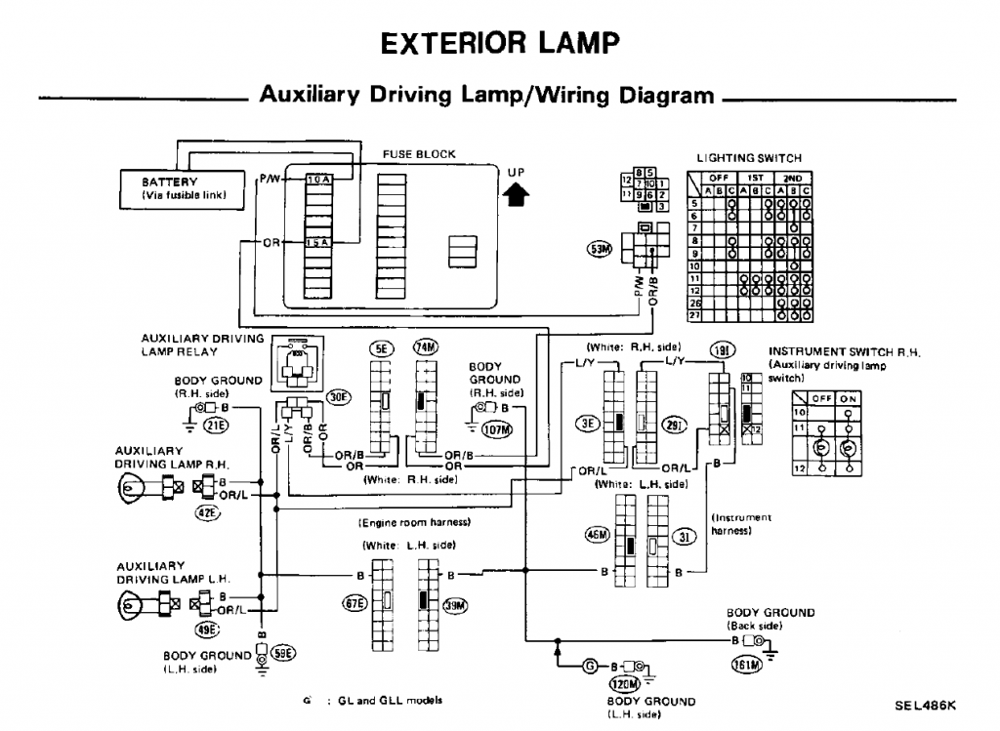

-
Anyone attempted this? i know its been discussed but cant find anything on it.
Right now my driving lights will only come on if my headlights are on, id like them to be on without my headlights since i put HID projectors in. -
Driving lights.. as in the dim turn signals and brake lights along with license plate lights?
"Let's play Battleship! There's enough Z's for that.."
My thread thingy: http://z31performance.com/showthread…ep-Zed-84Zed31 -
I think he means the fog (auxiliary driving) lights. -
I'd need to look at EL of the fsm to be sure, but should be able to switch relay control from headlight circuit to running light circuit.Damn dirty angels....these cars!
Current Daily Driver - 86 Turbo.
Under the cover - THE BANANA… that needs to be re-energized.
sigpic -
Interested as well. Need to get my actual fogs working again, as well. '86 300ZXT GLL
'86 300ZXT GLL
'78 Datsun 280Z BP
'11 Saab 9-3 Aero XWD -
'87 Z31 It's been almost a year since this thread was started. I hope some one can head me in the right direction to complete this sort of mod. I'd like to stop my headlights from overriding the fog light switch. Currently the fog lights don't come on unless the headlights are on. I'd rather be able to just push the dash button anytime to make these fog lights activate.
Can you help me? -
I'm not sure the exact wires at the moment, but if you run +12v to one of the wires on the fog light switch, from the ignition "on", with a diode to keep juice from getting back to the headlight switch, it should work fine. (been a while since ive been in there to look lol)
Project Black Betty

-
I know for the 84-86, one of the relays under the hood controls the fog lights. The fog light switch (which, as stated above, will only activate with the headlights on) grounds the relay to turn on the fog lights.
I have found the switched ground wire at the relay and ran another wire to it that I grounded (best way I could word it in my tired state, lol) and successfully turned on the fog lights without the vehicle/headlights having to be on.
So you could run a wire from the ground at the relay to a switch that will ground it out. Since it's just activating the relay, you won't need a heavy gauge wire for the switch. Doing it this way, you can use the added switch to run the fogs by themselves, but since you didn't remove any factory wiring, the original switch can still function normally when you want to use it.
I'm just finishing putting together my 86. She has been down for a whole year… The "new" motor seems healthy, hopefully it starts/runs! All I have left to do is make the adjustment arm/bracket for the alternator (running the 130A from a 2005 Titan) and a few other pieces to put together. The fog light mod is on my list, I'll have it done and take pics once she is running again

-
I was looking into this recently, I believe all you need to do is feed the Auxiliary Driving Lamp Relay ignition switched power instead of the output from the Lighting Switch. As in replace the OR/B wire going to the relay in the diagram below. If I am wrong feel free to correct me.
(Diagram is from a 1988 FSM)
 -
With that diagram, it looks like when you turn your headlights on, it bridges pin 8 and pin 10 on the lighting switch connector (p/w from fuse block to or/b). So, if we give OR/B straight power, it will allow use of the fog lamp switch at all times.Originally posted by PegCityZ
I would say if you go that route, just connect OR/B to accessory power (that way it turns off when you take the key out just in case you forget to turn off the switch). Just connect OR/B straight to P/W.
Thanks for the diagram! Still confused about my 86 though… I tested the connections with a multimeter and found that the relay was activated by a switched ground…
*edit* The relay is activated by a switched ground, as pin 11 on the aux. switch is ground, I was just confusing myself. I couldn't remember if I had the headlights on while I was testing, it's been a while!
Final solution: Give power to OR/B wire, either under dash, or at relay under hood. Use straight battery if you wanna run it anytime (car on or off), or use accessory power so it will turn on/off with the accessories/key switch. This will allow you to use the auxiliary light switch to control your fog lights without the headlights needing to be on. -
Thanks so much. This detail is beyond my expectations and very appreciated! Stay tuned for results. -
20140429_202921.jpg
A shout out to Edwin86Z and also to PegCityZ! This has worked out perfectly. We (my son can actually read wiring diagrams) gave power to OR/B wire at relay under hood. We chose to cut the OR/B wire near the relay and spice into the A/C circuit for accessory power and the final result is simply excellent! My dash switch controls the fog lights which have now become daytime running lights. You guys and this forum are such a great help.

Copyright © 2006–. All rights reserved. Privacy Policy